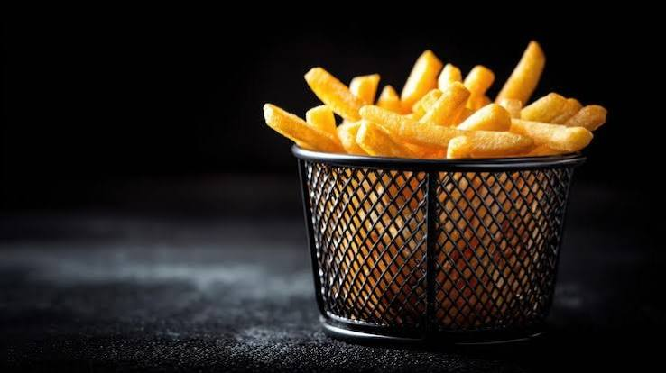

French fries are long, thin pieces of potato that are deep-fried in hot oil until they are crispy on the outside and soft on the inside.
Cut a whole potato into 6 mm / 1/4″ thick slices. Stack 2 or 3 slices then cut into 6 mm / 1/4″ thick batons. Use a serrated knife to make the fries crispier.
Keep cut fries in water to prevent them from browning as you continue cutting. No soaking time is actually required. A simple rinse followed by simmering the potatoes in vinegar water takes care of this for us.
Once all the fries are cut, place in a colander then rinse under tap water for 15 – 20 seconds. This is the first step to remove excess sugars from the surface of the potatoes (more on the “why” of this below, but in short it’s to aid crispiness — of course!). Meanwhile, the insides remain untouched by water so they’ll cook up nice and fluffy.
Once the potatoes are rinsed, place them in a pot with cold tap water, vinegar and salt. Bring to a boil on high heat then immediately turn down to low so the surface is barely rippling. Cook for 10 minutes.
Use a spider or large slotted spoon to remove the potatoes from the water into a colander. Then carefully spread the potatoes out on two tea towel-lined trays to steam dry for 5 minutes. No need to pat them dry, the residual heat will do the job for us.
When getting ready to fry, start with a heavy-based, large pot that is at least 10 cm or 4 inches deep, adding about 3 cm or 1.2 inches of oil—roughly 1 liter or quart for a standard 24 cm or 10-inch pot, which makes it feel more like shallow-frying than deep-frying. It is crucial to maintain about 7 cm or 2.8 inches of safety headroom above the oil's surface, as the mixture bubbles up significantly during frying and overflow presents a serious and dangerous risk. Finally, use a reliable thermometer, such as a Thermapen, to carefully preheat and monitor the oil temperature until it reaches 205°C or 400°F.
To fry the potatoes, separate them into three even batches—or adjust the batch size to your pot so the fries can float in a single layer—and work with one batch at a time. Using a spider or slotted spoon, carefully lower one-third of the first batch into the oil, then pause for 10 seconds to prevent the oil from bubbling up too high while you load your spoon for the next portion. Add the second third, wait another 10 seconds, and add the final third of the batch. Once all the fries for that batch are in the pot, fry them for 50 seconds, gently moving them around once or twice for even cooking.
Remove the fries from the oil using a slotted spoon and spread onto a paper towel-lined tray in a single layer. They will be pale and not yet crispy. Carry out Fry #1 for the remaining two batches using the same staggered approach (ie. ⅓ + ⅓ + ⅓) within each batch. Ensure the oil is back at 205°C/400°F before starting each batch. Then cool all the fries for 30 minutes on some paper towel-lined trays.
After cooling the fries, heat the oil to 205°C/400°F again. Now fry half all the french fries for 4 minutes until they are a gorgeous golden color and wonderfully crispy. Remove with a slotted spoon into a large paper towel-lined bowl then repeat with the remaining fries.
Now that your fries are done, sprinkle with salt or your favourite fries seasoning while hot so the salt sticks. Toss, then serve!